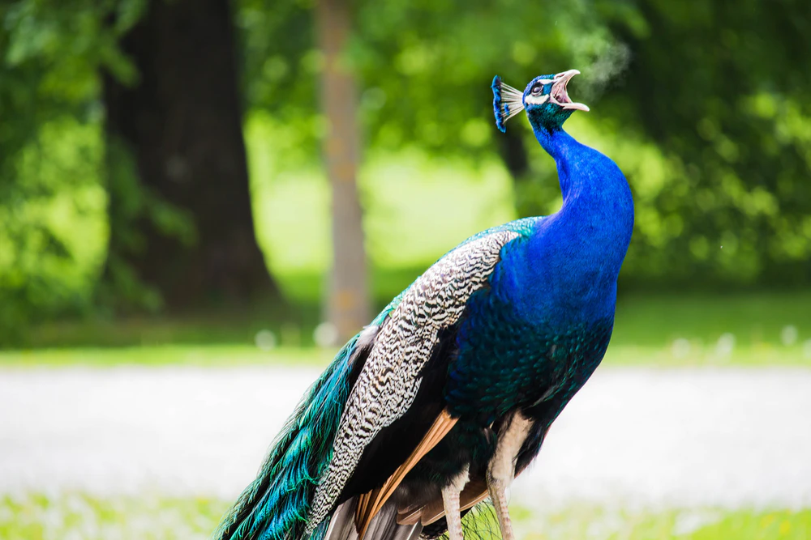

अपने परिवार के साथ रहकर भी एक परिवार से दूर हूँ,
पर क्या करे! मैं बहुत मजबूर हूँ।
यह वक्त है बहुत ठोस कठिनाई का ,
जैसे लगता है यह काम है किसी कसाई का ।
घर बैठे कोई काम नहीं ,
जब बाहार थे तब आराम नहीं ।
अब जब सब है घर के अंदर तो वक्त बिता रहे है संग ,
वहाँ बाहर चारों तरफ बिखरी प्रक्रति दिखा रही है अपने रंग ।
वाहनों के कम चलने से प्रदूषण कम हुआ ,
स्वच्छ है पानी चाहे हो वो नदी, समुद्र, या कुआ ।
पक्षियों की चहचाहट सुनाई देती है ,
दिखते है सड़कों पर अब जंगली जानवर ,
यह आखरी बार तब हुआ था ,
जब मनुष्यों ने नष्ट नही किए थे जंगल और सरोवर ।
वक्त एसा पहलू है जिसने पलट दिया है पासा ,
अब कुछ मत बिगाड़ना वरना नही बचा पाएगा कोई "नासा" ।
पर्यायवरण वह दोस्त है जो देता है हर वक्त हमारा साथ ,
ये हमारे जन्म से लेकर हमारे साथ रहता है, न समझना खुद को काभी अनाथ ।
कवि आरव श्रीवास्तव
Comment: